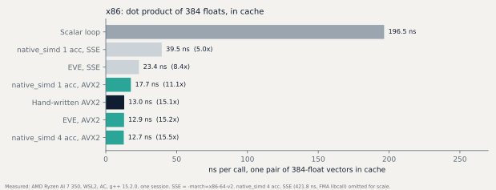
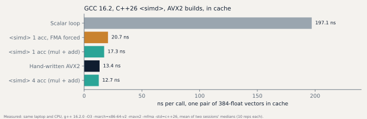
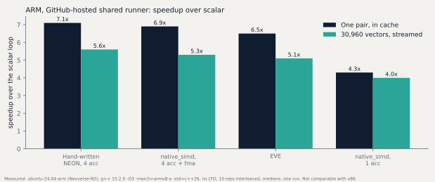

What SIMD buys a 384-float dot product
On this loop, splitting the single chain of floating-point additions into several independent ones mattered about as much as making the registers wider. And on a log repetitive enough that deduplication leaves only a few dozen distinct vectors, a kernel that is 15 times faster in cache saved a few microseconds per search, far less than the search time varies from one run to the next.
x86 numbers: one laptop (AMD Ryzen AI 7 350, WSL2), single thread. The kernel benchmarks were built from v0.3.0 plus a benchmark written for this article (sources below), with g++ 15.2.0, -O3 -march=x86-64-v2, -std=c++26, no LTO. Search timings and release assembly come from the official nesso_0.3.0_amd64.deb, extracted. ARM numbers come from a GitHub-hosted shared runner and are reported in their own section. A later session with GCC 16.2 has its own section.
nesso is a small Linux CLI that searches logs by meaning. Each log line becomes a 384-dimensional vector, the output size of compact embedding models such as all-MiniLM-L6-v2, which is the one nesso uses, and a search ranks lines by how close their vectors are to the query's. Underneath that ranking sits one small function, the dot product of two arrays of 384 floats.
Since 0.3.0 nesso ships two versions of it: the plain loop, kept as a reference, and a hand-written AVX2 kernel. An environment variable can force either kernel at run time, which makes it easy to time both inside the same binary. I started by looking at why the plain loop is as slow as it is. Then I measured how much of the AVX2 speedup is left once the function runs inside a real search, and tried two portable SIMD libraries to see whether the intrinsics were needed at all.
How I measured
The x86 numbers in the main tables come from one session on the laptop, plugged in, with every benchmark pinned to logical CPU 2. I assume that CPU belongs to one of the chip's Zen 5 cores rather than the smaller Zen 5c ones, but under WSL I couldn't confirm it: core types and clock speeds aren't visible from inside, so the clock wasn't recorded. As a stability check, the plain loop was timed again at the start, in the middle and at the end of the session, and those medians stayed within 0.5% of each other (196.1, 197.0 and 196.2 ns). Each kernel ran in Google Benchmark with 10 repetitions in random interleaved order, and the tables give medians. The ARM numbers come from a single run on a GitHub-hosted shared runner, with the same repetitions and interleaving but no pinning. The GCC 16.2 comparison is a later session, described in its own section.
| x86 kernel, 384 floats | In cache | Streamed, per vector | Speedup over scalar (in cache / streamed) |
|---|---|---|---|
| Scalar loop, dot product | 196.5 ns | 200.1 ns | |
| Hand-written AVX2 + FMA, dot product | 13.0 ns | 29.4 ns | 15.1x / 6.8x |
| Scalar loop, squared L2 | 197.8 ns | 201.8 ns | |
| Hand-written AVX2 + FMA, squared L2 | 12.9 ns | 29.9 ns | 15.3x / 6.8x |
| EVE, baseline (SSE) | 23.4 ns | 32.3 ns | 8.4x / 6.2x |
| EVE, AVX2 build | 12.9 ns | 29.5 ns | 15.2x / 6.8x |
native_simd, 1 accumulator, baseline (SSE) |
39.5 ns | 44.4 ns | 5.0x / 4.5x |
native_simd, 1 accumulator, AVX2 build |
17.7 ns | 31.1 ns | 11.1x / 6.4x |
native_simd, 4 accumulators + fma, baseline (SSE) |
421.8 ns | 426.9 ns | 0.47x / 0.47x |
native_simd, 4 accumulators + fma, AVX2 build |
12.7 ns | 29.6 ns | 15.5x / 6.8x |
"In cache" is one pair of vectors timed over and over. "Streamed" is one pass over 30,960 distinct vectors (about 47.6 MB) divided by the number of vectors. The dot-product rows are compared with the scalar dot product, the L2 rows with the scalar L2. The squared L2 distance, nesso's other distance kernel, has the same shape, a subtraction and a square feeding the same single chain of additions, and it behaves the same way, so the rest of the article follows the dot product only.
Why the plain loop is slow
The scalar version is the loop everyone writes:
float sum{};
for (size_t i = 0; i < a.size(); ++i)
sum += a[i] * b[i];
In the released x86 binary this loop is inlined into the scoring function. GCC 15 vectorizes the multiplications, four at a time with mulps, and then adds the four products to the running sum one by one with addss:
movups (%r14,%rax,1),%xmm1
movups 0x0(%r13,%rax,1),%xmm5
add $0x10,%rax
mulps %xmm5,%xmm1 # four products at once
...
addss %xmm0,%xmm2 # then four additions, each waiting
addss %xmm3,%xmm2 # for the one before it
addss %xmm2,%xmm0
addss %xmm1,%xmm0
cmp %rdx,%rax
jne 25dd40
Inner loop of the official v0.3.0 x86 binary, shuffles trimmed. Full listing in asm/r3-x86-release-score.s.
The reason is floating-point rounding. Float addition isn't associative, so (a + b) + c and a + (b + c) can give different results, and without -ffast-math (or more precisely -fassociative-math) the compiler must keep the additions in source order. Products can be computed in any order, because each one is independent. The sum can't, so all 384 additions form a single chain and each must wait for the result of the previous one. At about 196 ns per call, half a nanosecond per element, the timing fits that picture. In an earlier test of the same loop with the same flags, Clang 19.1 kept the whole loop scalar, so the chain is there with either compiler.
Asking for vectorization doesn't lift the rule on its own. The standard does let std::transform_reduce regroup its sum, but libstdc++ passes that permission to GCC as an OpenMP simd reduction pragma, which GCC ignores unless the code is built with -fopenmp or -fopenmp-simd. A quick illustration on Compiler Explorer (GCC 15.2, same flags, outside the measured runs): std::transform_reduce(std::execution::unseq, ...) still produced the serial chain without that flag and a vector sum with it. The same goes for writing #pragma omp simd reduction(+:sum) yourself; a plain #pragma omp simd without the reduction clause kept the additions in order even with OpenMP enabled.
The hand-written kernel
The AVX2 version keeps four 8-wide accumulators and uses fused multiply-add, so four independent chains run side by side:
for (; index + 32 <= a.size(); index += 32) {
sum0 = _mm256_fmadd_ps(_mm256_loadu_ps(a + index), _mm256_loadu_ps(b + index), sum0);
sum1 = _mm256_fmadd_ps(_mm256_loadu_ps(a + index + 8), _mm256_loadu_ps(b + index + 8), sum1);
sum2 = _mm256_fmadd_ps(_mm256_loadu_ps(a + index + 16), _mm256_loadu_ps(b + index + 16), sum2);
sum3 = _mm256_fmadd_ps(_mm256_loadu_ps(a + index + 24), _mm256_loadu_ps(b + index + 24), sum3);
}
The released binary keeps that shape exactly:
vfmadd231ps -0x80(%rax),%ymm4,%ymm0
vfmadd231ps -0x60(%rax),%ymm5,%ymm2
vfmadd231ps -0x40(%rax),%ymm6,%ymm1
vfmadd231ps -0x20(%rax),%ymm7,%ymm3
From DotProductAvx2Fma in the official v0.3.0 binary; the four lanes are folded into one value after the loop.
With 8 floats per ymm register and four accumulators, each iteration covers 32 floats, so a 384-float vector takes exactly 12 iterations with no scalar tail, a loop short enough that its overhead and the FMA latency chain show up in the timing. In each iteration one operand of every FMA is loaded with vmovups, and vfmadd231ps reads the other directly from memory (asm/r3-x86-release-dot-avx2.s).
The kernel lives in its own translation unit compiled with target("avx2,fma"), so the rest of the binary stays on the baseline instruction set, and the CPU is checked once at startup before this path is chosen. Machines without AVX2 and FMA keep the scalar loop. The snippets are simplified; the real code works on std::span.
Adding in four interleaved groups changes the rounding, so this kernel's result differs from the plain loop's in the last bits. That is acceptable only if it never changes the ranking, which I come back to below.
How much faster it really is
With both vectors in L1 cache the gap is large: 196.5 ns for the plain loop against 13.0 ns for the AVX2 kernel, 15.1x, and 15.3x for the squared L2 distance. Fifteen times is more than the eight lanes of AVX2 alone would explain. The rest comes from breaking the addition chain into four.
uops.info measures vfmadd231ps on Zen 5 at 4 cycles of latency through the accumulator, with two able to start per cycle. Each of the four chains holds 12 dependent FMAs, so on paper four accumulators keep one FMA starting per cycle, half of what the core can issue, and it would take eight to cover the latency fully. I haven't measured an eight-accumulator version.
A search doesn't compare one pair of vectors over and over, though. It compares the query with every vector in the index, and those vectors come from memory. That is what the streamed column measures: one pass over 30,960 distinct vectors, about 47.6 MB, much more than this chip's caches hold.

The scalar loop barely notices: 200.1 ns per vector streamed against 196.5 ns in cache. The AVX2 kernel goes from 13.0 ns to 29.4 ns, so the speedup drops from 15.1x to 6.8x. At 29.4 ns per 1,536-byte vector the kernel reads about 52 GB/s (derived from the pass time), and the result is consistent with it spending much of its time waiting for data from memory. Past that point a faster loop doesn't help much; what helps is moving fewer bytes per comparison, for example by storing the vectors as fp16, bf16 or int8, or scoring several queries in each pass over the data.
The figure of 30,960 isn't arbitrary. It is the number of distinct vectors nesso keeps for the first 100,000 lines of BGL, a Blue Gene/L supercomputer log from the public Loghub-2.0 collection, once it masks the parts of each line that change (such as IDs and numbers). I didn't time a full search on BGL. The benchmark's pass times give the size of what is at stake there: one pass over those 30,960 vectors took 6.2 ms with the plain loop and 0.9 ms with AVX2, so the kernel can save at most about 5 ms per query on that log. Whether a user notices depends on the rest of the search, which I haven't broken down here.
On a log with fewer distinct lines the picture changes completely. The first million lines of HDFS, from the same collection, reduce to 34 distinct vectors. I ran the query Got exception while serving block with the official v0.3.0 binary, one thread, three warm-up runs and ten timed runs per kernel. The distance-stage timer that nesso prints when tracing is on had a median of 9 µs with the plain loop and 3.5 µs with AVX2. The trace counter steps in whole microseconds, so per-vector costs derived from it would mean little.
The whole search took a median of 0.964 s with the plain loop and 0.915 s with AVX2. That gap of about 50 ms is roughly ten thousand times larger than what the distance stage saved, so it has to come from variation elsewhere in the process: the two runs that make up the scalar median took 0.915 s and 1.014 s. On this log the fast kernel makes no measurable difference to the search, because masking had already reduced a million comparisons to 34 and left little for a faster kernel to speed up.
Do you need hand-written intrinsics?
Intrinsics tie the kernel to one instruction set, and nesso's arm64 build currently ships only the plain loop. So I wrote the same dot product with two portable libraries and compiled each twice: once for the baseline target (-march=x86-64-v2, 128-bit SSE) and once with -mavx2 -mfma added. EVE (tag v2023.02.15) was used through eve::algo::transform_reduce with eve::fma. The C++26 <simd> header isn't available in g++ 15.2, so the second version uses std::experimental::native_simd<float> from <experimental/simd>, first as the simplest loop, with one accumulator and a single reduction at the end. (GCC 16.2 does ship <simd>; I come back to it in its own section below.) The bench is built as ISO C++26: compile_commands.json shows -std=c++26 and no -ffp-contract flag.

EVE's AVX2 build runs as fast as the hand-written kernel, in fact slightly faster in this session: 12.9 against 13.0 ns, a difference of under 1%. Its inner loop explains why. It also keeps four accumulators and uses vfmadd231ps, which is the same plan I wrote by hand:
vmovaps 0x80(%r10),%ymm7
sub $0xffffffffffffff80,%r10
vfmadd231ps (%rcx),%ymm7,%ymm0
sub $0xffffffffffffff80,%rcx
vmovaps 0x20(%r10),%ymm7
vfmadd231ps -0x60(%rcx),%ymm7,%ymm5
vmovaps 0x40(%r10),%ymm7
vfmadd231ps -0x40(%rcx),%ymm7,%ymm3
vmovaps 0x60(%r10),%ymm7
vfmadd231ps -0x20(%rcx),%ymm7,%ymm6
cmp %rdx,%r10
jne 140
EVE, AVX2 build, full inner loop. asm/r3-x86-eve-avx2.s.
The one-accumulator native_simd is wide enough but its additions form a chain again, just eight lanes wide, and at 17.7 ns it is about 36% slower than the hand-written kernel. In the AVX2 build GCC also emitted a separate multiply and add rather than a fused one:
vmulps -0x20(%rdi,%rax,4),%ymm0,%ymm0
add $0x8,%rax
vaddps %ymm0,%ymm1,%ymm1 # one accumulator: each add waits for the last
std::experimental::native_simd, one accumulator, AVX2 build. asm/r3-x86-stdsimd-avx2.s.
The build flags don't explain it. The bench's compile_commands.json has -std=c++26 and no -ffp-contract flag, and in ISO C++ mode GCC defaults to -ffp-contract=fast. On ARM, the same source with the same flags became fmla (asm/r3-arm-stdsimd-baseline.s), and the four-accumulator version below, with an explicit std::experimental::fma, compiles to vfmadd231ps on the laptop. As a side check on Compiler Explorer (GCC 15.2), the one-accumulator loop stayed vmulps plus vaddps even with -std=gnu++26 or an explicit -ffp-contract=fast, while the scalar tail of the same function was fused into vfmadd231ss. The cause is in GCC's x86 tuning, not in the library; the GCC 16.2 section below shows it, and that the unfused form is the faster one on this chip. C++26's <simd> (P1928) standardizes the data-parallel types and their reductions within a register, but it has nothing like EVE's transform_reduce over a range (the proposal to combine simd with the parallel algorithms, P0350, is not part of C++26). With it you still choose the number of accumulators yourself.
To separate the library from the loop shape, I also wrote a native_simd version with four accumulators and an explicit std::experimental::fma. In the AVX2 build it compiles to the same four vfmadd231ps into four ymm registers as the hand-written kernel, and at 12.7 ns it was about 2.5% faster than the hand-written kernel in this session:
vfmadd231ps -0x80(%rdx),%ymm5,%ymm0
vfmadd231ps -0x60(%rax),%ymm6,%ymm2
vfmadd231ps -0x40(%rax),%ymm7,%ymm1
vfmadd231ps -0x20(%rax),%ymm4,%ymm3
native_simd, 4 accumulators + fma, AVX2 build. asm/r3-x86-stdsimd4acc-avx2.s.
The baseline build of that version is the trap. -march=x86-64-v2 has no FMA instructions, and fma promises a single rounding, so the compiler can't replace it with a multiply and an add. It calls a library routine for every lane instead, and at 421.8 ns the result is more than twice as slow as the plain loop. An explicit fma only pays off when the target has the instruction.
The baseline builds of the other two show the effect of the accumulators most clearly. native_simd with four SSE lanes and one chain is 5.0x faster than the plain loop, roughly what four lanes would give. EVE on the same four lanes, with four chains, is 8.4x faster, so here the extra accumulators add about 1.7x on top of the width. Going from SSE to AVX2 with four chains, EVE gains about 1.8x, which is where the opening claim comes from.
Streaming narrows these differences, as it did for the hand-written kernel. Per vector over the 30,960-vector set, the hand-written kernel takes 29.4 ns, EVE's AVX2 build 29.5 ns, the four-accumulator native_simd 29.6 ns and the one-accumulator native_simd 31.1 ns. With the data coming from memory, all the AVX2 versions end up within 2 ns of each other.
Every kernel passed the correctness check against the plain loop, which compares 1,000 random vector pairs with a limit of 1e-3.
GCC 16.2 and the C++26 <simd> header
The measurements above use g++ 15.2.0. GCC 16.2 does ship the C++26 <simd> header, so I re-ran the x86 kernels with it. This is a separate session from the tables above: the same laptop and the same CPU 2, but each compiler ran inside its own Ubuntu container (26.04 with g++ 15.2.0, 26.10 with g++ 16.2.0), built by hand with the flags of the main build (-O3 -march=x86-64-v2 -std=c++26, plus -mavx2 -mfma for the AVX2 builds, no LTO) from the same benchmark sources plus one file with the new kernels. Each compiler ran the benchmark twice, 10 interleaved repetitions each, and the table shows the range of the two medians, in nanoseconds, for GCC 15.2 and GCC 16.2. native_simd is <experimental/simd>; <simd> is the C++26 header, which only GCC 16.2 has. Most in-cache numbers repeated within 2% between the two runs, but the fastest kernels, the four-accumulator AVX2 versions at 12 to 14 ns, moved by up to 13%, and the streamed numbers by up to 8%. Differences smaller than that mean nothing here.
| Kernel, 384 floats (ns) | Cache, 15.2 | Cache, 16.2 | Streamed, 15.2 | Streamed, 16.2 |
|---|---|---|---|---|
| Scalar loop | 196.0–196.3 | 196.2–198.0 | 199.6–199.7 | 200.3–201.0 |
| Hand-written AVX2 + FMA | 13.0–13.7 | 12.7–14.0 | 29.9–32.3 | 30.3–32.0 |
| EVE, AVX2 | 12.0–12.9 | 12.9 | 28.5–29.9 | 30.2–31.8 |
native_simd, 1 acc, AVX2 |
17.3 | 17.3–17.5 | 30.7–31.4 | 31.5–33.4 |
native_simd, 4 acc + fma, AVX2 |
12.2–13.7 | 12.6–12.7 | 29.0–29.9 | 31.0–31.9 |
native_simd, 4 acc + fma, baseline |
418.1 | 418.8–419.0 | 425.9–432.2 | 423.1–428.4 |
<simd>, 1 acc, AVX2 |
n/a | 17.1–17.5 | n/a | 32.5–33.0 |
<simd>, 1 acc, AVX2, FMA forced |
n/a | 20.5–20.8 | n/a | 32.3–33.6 |
<simd>, 4 acc, AVX2 |
n/a | 12.6–12.7 | n/a | 30.3–31.6 |
<simd>, 1 acc, baseline (SSE) |
n/a | 42.1–42.2 | n/a | 44.9 |
<simd>, 4 acc, baseline (SSE) |
n/a | 21.2–21.3 | n/a | 32.7–32.9 |
The compiler version changes nothing here. Averaged over the two runs, every kernel measured with both compilers is within 4% in cache and 7% streamed, inside the run-to-run spread. The AVX2 inner loops I inspected are the same as well. Moving the release build from GCC 15 to GCC 16 would not, on this evidence, change the dot-product kernels.
libstdc++ 16's <simd> targets x86 only, and it has no fma. libstdc++ 16 enables <simd> through its own __glibcxx_simd macro, only when __SSE2__ is defined, and does not set the standard __cpp_lib_simd feature-test macro. On aarch64 the header stays disabled (a cross-compile with g++-16 finds no __glibcxx_simd), and Clang 23 with libstdc++ 16 fails too: the header requires expansion statements (__cpp_expansion_statements), which Clang 23 does not advertise. These are limits of this first libstdc++ release, not of the standard. And std::simd::fma does not exist in this release ('fma' is not a member of 'std::simd'), so the four-accumulator kernel is written as acc += a * b and the compiler does the fusing. In the AVX2 build it compiles to the same four vfmadd231ps into four ymm registers as the hand-written kernel, and at 12.7 ns it matches it. In the SSE baseline build the same loop becomes mulps and addps and runs at 21.3 ns, a little faster than EVE's 22.9 ns. That is not a win of the new header over <experimental/simd>: the 418 ns of the four-accumulator native_simd row comes from its explicit fma, which has to call a library routine on a target without FMA instructions, while acc += a * b becomes a multiply and an add in either library, as the one-accumulator native_simd row already shows.

The one-accumulator puzzle. The one-accumulator loop stays vmulps plus vaddps in GCC 16 as well, 17.3 ns. The cause is GCC's x86 tuning, which avoids creating chains of fused multiply-adds through a loop-carried accumulator: --param=avoid-fma-max-bits defaults to 256, and the generic tuning and -mtune=znver5 both keep the multiply and the add apart, so that only the add sits on the dependency chain and the multiply runs ahead of it. Setting the parameter to 0, or tuning for -mtune=intel or -mtune=skylake, produces vfmadd231ps (compare asm/gcc16-cxx26-avx2.s with asm/gcc16-cxx26-avx2-fused.s). GCC 15.2 does the same with the parameter and with -mtune=intel. It is not a library problem, and -ffp-contract is not involved. Forcing the fused form on this laptop was the wrong call: one accumulator took 20.7 ns, about 19% slower than the unfused loop at 17.3 ns. uops.info gives the reason: on Zen 5, vaddps on ymm registers has 2 cycles of latency and vfmadd231ps 4 through the accumulator, so fusing doubles the latency of every step on the chain. The measured gap is smaller than a factor of two, probably because successive calls in the benchmark loop are independent and overlap in the out-of-order core; I haven't isolated the latency on its own. Either way the compiler's default was right for this chip, and with four accumulators, where the FMA latency is spread over four independent chains, GCC does fuse. Streamed, the two one-accumulator versions are the same, 32 to 34 ns, because memory sets the pace there.
The same code on ARM
Measured on a GitHub-hosted shared runner (ubuntu-24.04-arm, Neoverse-N2, 4 vCPUs), g++ 15.2.0, -O3 -march=armv8-a, no LTO, 10 repetitions, medians. Shared runners are noisy and the hardware can vary between runs, so only the ratios within the run are meaningful. These numbers should not be compared with the laptop's. All five kernels ran in one benchmark invocation with random interleaving; the release assembly is from the official v0.3.0 arm64 binary.
The portable kernels compile for ARM without any change. NEON registers hold four floats, half of AVX2's width. The plain loop in the official v0.3.0 arm64 binary has the same structure as on x86: one vector multiply, then four additions into a single scalar accumulator, in order.
fmul v29.4s, v1.4s, v29.4s # four products at once
fadd s31, s31, s29 # then four additions, each waiting
mov s0, v29.s[1]
mov s30, v29.s[2]
mov s29, v29.s[3]
fadd s31, s0, s31
fadd s31, s30, s31
fadd s31, s31, s29
Inner loop of DistanceMetrics::DotProduct<float> in the official v0.3.0 arm64 binary. asm/arm-release-dot-scalar.s.
EVE's main loop uses fmla, the NEON fused multiply-add, on four accumulators:
fmla v31.4s, v20.4s, v21.4s
fmla v0.4s, v22.4s, v23.4s
fmla v27.4s, v24.4s, v25.4s
fmla v28.4s, v29.4s, v30.4s
EVE, -march=armv8-a. asm/r3-arm-eve-baseline.s.
native_simd also uses fmla, on a single accumulator (asm/r3-arm-stdsimd-baseline.s). For a reference I wrote a NEON kernel by hand with four float32x4_t accumulators and vfmaq_f32. Its main loop is the shape you would expect:
fmla v28.4s, v25.4s, v24.4s
fmla v29.4s, v23.4s, v22.4s
fmla v19.4s, v21.4s, v20.4s
fmla v18.4s, v27.4s, v26.4s
Hand-written NEON, 4 accumulators. asm/r3-arm-neon4acc.s.
The four-accumulator native_simd with fma also puts four fmla into four accumulators in its main loop (asm/r3-arm-stdsimd4acc-baseline.s).

| ARM, shared runner, one run: ratio to the scalar loop | In cache | Streamed, 30,960 vectors |
|---|---|---|
| Hand-written NEON, 4 accumulators | 7.1x | 5.6x |
native_simd, 4 accumulators + fma |
6.9x | 5.3x |
| EVE | 6.5x | 5.1x |
native_simd, 1 accumulator |
4.3x | 4.0x |
The pattern is the same as on x86 at half the width. With one accumulator, native_simd gets close to the four lanes NEON offers, and with four it moves up next to EVE. In cache, the four-accumulator native_simd was 4% slower than the hand-written NEON kernel and EVE 10% slower; streamed, the gaps were 4% and 9%. On x86 the portable versions matched or slightly beat the hand-written kernel, while here they trail it a little. With a single run on a shared machine I wouldn't read much into a gap of that size.
Same results either way
Changing the order of a sum changes its rounding, so before trusting any of these kernels I compared the JSON output of the same searches with the plain loop and with AVX2 (earlier build, kernels as in 0.3.0):
- The top 50 results came back in the same order with either kernel, on HDFS and on BGL.
- The raw similarity scores differed by at most 2.7e-7, far below anything that could reorder results. CI fails if the difference passes 1e-3.
- On the synthetic benchmark log, each kernel gave byte-identical output with 1 and 8 threads.
One detail cost me a second look. My first comparison reported a score difference of exactly zero, which is suspicious for two kernels that add in a different order. By default nesso combines the vector score with a keyword score, and the JSON score field holds that combined value. In dense-only mode the score is the raw dot product, and the expected rounding noise appeared.
The plain loop stays in the binary for this reason. It is the reference every fast path is tested against.
What I'm taking from this
The plain loop is slow because the language rules fix the order of its additions, and on both architectures GCC respects that by vectorizing the multiplies and leaving one chain of adds. Splitting that chain mattered about as much as the wider registers. Once the loop has the same shape, the library makes little difference: on x86, EVE and a four-accumulator native_simd matched my hand-written AVX2 within about 3%, and on the ARM runner they came within 4% and 10% of a hand-written NEON kernel. GCC 16.2 changed none of this: the same kernels compile to the same loops with the same timings. Its C++26 <simd> matches the hand-written kernel on x86, but libstdc++ 16 enables it only there, so it can't yet replace the intrinsics on arm64. How much of that speedup a user sees depends on the data. In cache the AVX2 kernel was 15.1x faster, and with the vectors coming from memory 6.8x. On a log as repetitive as HDFS it saved a few microseconds per search, because masking had already removed almost all of the work.
What this means for nesso
The numbers point away from more work on the float32 x86 kernel and toward a few smaller decisions.
Keep the AVX2 kernel and the runtime check. It already matches the best portable versions, and once the vectors come from memory every four-accumulator version lands between 29.4 and 29.6 ns. Keeping it in its own translation unit compiled with target("avx2,fma"), behind a CPU check at startup, lets the release binary stay on the x86-64-v2 baseline.
Give arm64 a fast path. The arm64 build still runs the plain loop, and that is where a kernel still pays: 5.6x to 7.1x on the ARM runner. A four-accumulator NEON kernel with vfmaq_f32 is the smallest change. It adds no dependency, and fmla is part of the armv8-a baseline, so it needs no runtime check either. EVE would cover both architectures from one source and came within 10% of it, at the cost of a third-party dependency for one function. C++26 <simd> is the candidate for later, once libstdc++ enables it beyond x86 and provides fma.
Write any kernel with several accumulators and without an unconditional fma. One accumulator left a full AVX2 register about 36% slower than the hand-written kernel. An explicit fma on a target without FMA instructions made a four-accumulator loop more than twice as slow as the plain loop, because every lane became a library call. Eight accumulators might still help in cache, since Zen 5 can start two FMAs per cycle at 4 cycles of latency, but the streamed numbers suggest a search wouldn't notice.
Spend the next effort on bytes and on the rest of the search. At about 52 GB/s, fewer bytes per vector is what would speed up a streamed scan: fp16 or bf16 would halve the 1,536 bytes and int8 would quarter them, though each changes the scores and would have to pass the same ranking checks as the AVX2 kernel did. Scoring several queries in one pass would share the reads in batch use. And on a log as repetitive as HDFS the kernel takes microseconds of a 0.9 s search, so the rest of that time, which this article doesn't break down, is where a user would notice an improvement.
Keep the plain loop as the reference. Every fast path, a NEON or a quantized one included, is checked against it: the same top 50 in the same order, and dense scores within 1e-3 in CI.
Reproducing it
The search timings can be rerun with the official v0.3.0 .deb on any x86 machine with AVX2 and FMA. The settings I used:
# choose the kernel (scalar or avx2) and print the stage timings
NESSO_FORCE_KERNEL=scalar NESSO_TRACE=1 NESSO_THREADS=1 taskset -c 2 \
nesso search "Got exception while serving block" -i hdfs-1m.nesso --threads 1 \
--model-dir /usr/share/nesso
The positional argument is the query, and -i points to the corpus index, here hdfs-1m.nesso, built from the first 1,000,000 lines of HDFS from Loghub-2.0. --model-dir is the directory with the model shipped in the .deb, which is /usr/share/nesso once the package is installed. Each kernel had three warm-up runs and ten timed runs in the default search mode. The score comparison in "Same results either way" used --mode dense, which makes the JSON score the raw dot product.
The kernel microbenchmarks are Google Benchmark runs with --benchmark_repetitions=10 --benchmark_enable_random_interleaving=true, built with -O3 -march=x86-64-v2 -std=c++26 (plus -mavx2 -mfma for the AVX2 builds) and, on ARM, -O3 -march=armv8-a. The GCC 16.2 section used g++-16 16.2.0 from Ubuntu 26.10 against g++-15 15.2.0 from Ubuntu 26.04, with the same flags. The benchmark sources, the scripts for the GCC 15.2 and 16.2 containers, and the assembly listings cited above are published next to this article, in bench/ and asm/. The listings from the main session are unedited objdump excerpts, except that local build paths in their headers were shortened; the gcc16-*.s files are the compiler's own -S output. bench/README.md has the exact build and run commands.